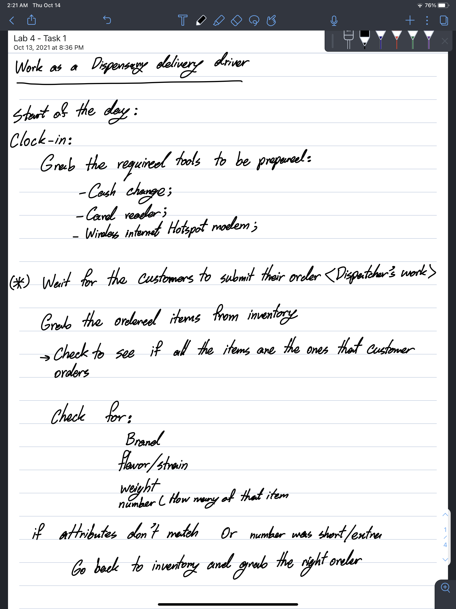

Challenges
The idea of this lab was to get us familiarized with the concept of Pseudoncoding and give us the habbit of making a pseudocode for a program beforee we start it and how it can help and improve our programming and brainstorming
Process of pseudocoding an everyday task
Problems
One of the problems that was given to us in this lab was to try to pseudocode a high-level computer task that we have in mind to to create, and create a clear image of what it does and what features does it need to have to be considered as complete
Pseudoncoding a high-level computer task
Results
At the end of this lab, we came to an end of creating a author block on top of the java-script source of the file for the program, and at the end we add the pseudocode as comment in the program
//
// Creating a web-site for buying and reselling video games:
// Display the name and the image of all the games available
// Displays portion of attributes of the game, such as price and age-range
// Clicking on each banner opens a new window about the game only
// Displays the picture of the game, some information about the game,
// and displays all the attributes of the game such as the price,
// age range, creator brand.
// Displays the price section with three parts of price for brand new,
// The lowest price ask to buy a certified used game, and the highest
// bid from a buyer
//
// Display banner on top with limited members of new available and trending products
// Contains an Horizontal scroll
//
// Displays help bar at the very top containing the following options:
// About
// Help
// News
// Login/Signup
//
// Displays a shopping help bar containing the different type of products i.e:
// Video games
// Collectibles
// Accessories
// Add-ons
// Cheat codes/ Game assist
//
// Displays a bar with filters that displays the video games sorted in groups
// based on the preference attribute
//
// Displays category option for the products based on the manufacturer and
// the brand at the bottom
// Different logos of different brands, containing the games with the same
// brand attribute as the brand section they’re assigned to
//
// Display the credit for the creator of the website,
// the social media account addresses and link, contact information and
// frequently asked questions
//
//
// Creating a Tic-Tac-Toe game:
// 1. Print the board before each turn
// 2. Accept user input
// 3. Validate user move
// 4. Evaluate possible moves
// 5. Choose computer move
// 6. Test of win or draw condition
//
Included with the pseudocode for the high-level task program